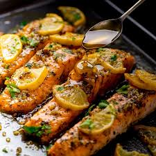

Oven-Baked Salmon

Description
Here's a simple guide to help you with preparing an oven-baked salmon dinner.
Ingredients
- 2 lemons, thinly sliced
- 1 large skin-on salmon fillet (about 3 lb.)
- Kosher salt
- Freshly ground black pepper
- 2 cloves garlic, finely chopped
- 6 Tbsp. unsalted butter, melted
- 2 Tbsp. honey
- 1 tsp. chopped fresh thyme leaves
- 1 tsp. dried oregano
- Chopped fresh parsley, for serving
Steps
- Preheat oven to 350°
- Season salmon
- In a small bowl, whisk garlic, butter, honey, thyme, and oregano until combined. Pour over salmon
- Bake salmon until opaque & cooked through
- Heat broiler. Broil salmon.
- Transfer lemons and salmon to a platter. Top with parsley.